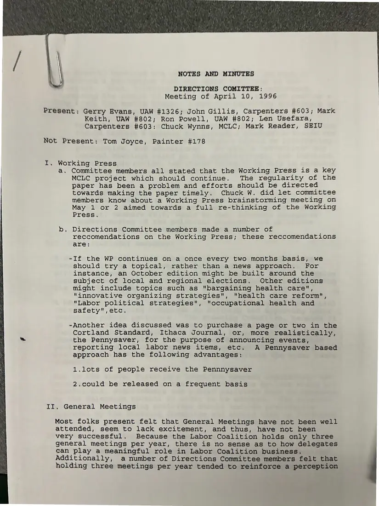
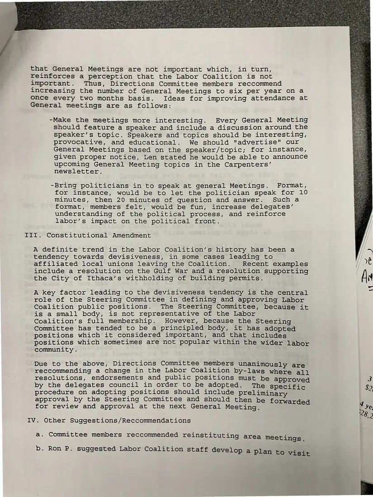
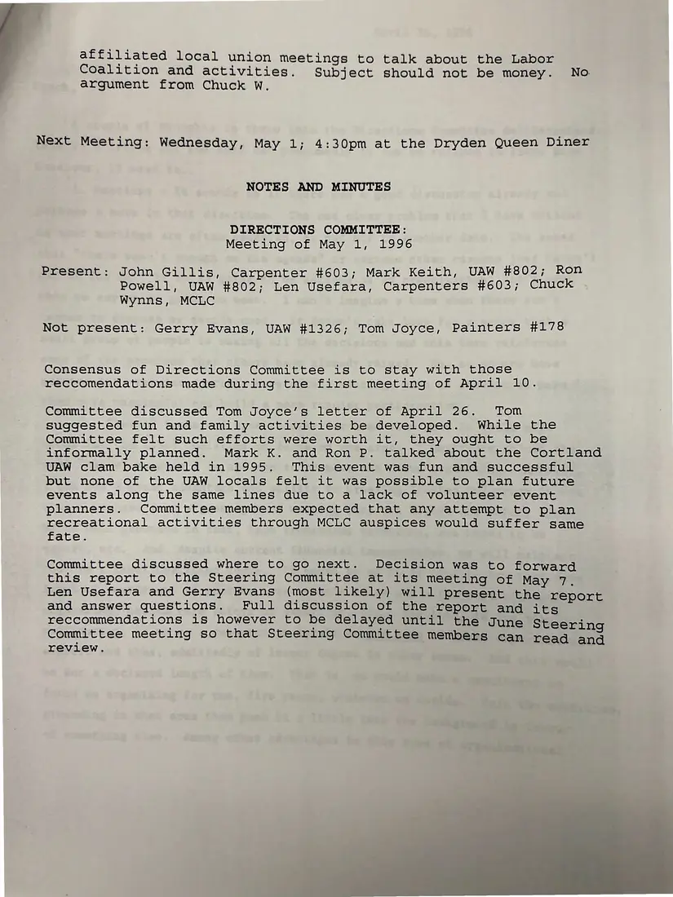
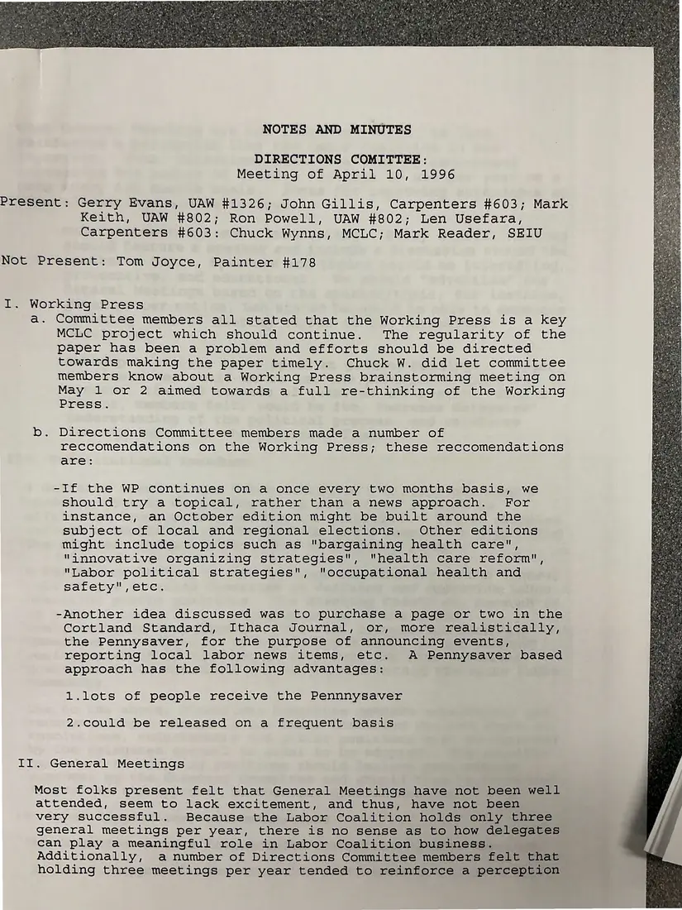

Minutes, 3 pages, plus 1 additional copy
Directions Committee notes and minutes, April 10 and May 1, 1996
April 10 and May 1, 1996
The committee recommends keeping The Working Press but rethinking it (topical issues, perhaps a Pennysaver page), holding six general meetings a year with speakers, requiring Steering Committee positions to go to delegates for approval, and reinstating area meetings. The May 1 minutes follow up on Tom Joyce's letter.
Download or cite this itemPages


(open zoom view)Read the page text (machine-read, mostly readable)
This text was generated automatically from the photograph and has not been corrected. The image is the authoritative record.
\ NOTES AND MINUTES DIRECTIONS COMITTEE: Meeting of April 10, 1996 Present: Gerry Evans, UAW #1326; John Gillis, Carpenters #603; Mark Keith, UAW #802; Ron Powell, UAW #802; Len Usefara, Carpenters #603: Chuck Wynns, MCLC; Mark Reader, SEIU Not Present: Tom Joyce, Painter #178 I. Working Press a. Committee members all stated that the Working Press is a key MCLC project which should continue. The regularity of the paper has been a problem and efforts should be directed towards making the paper timely. Chuck W. did let committee members know about a Working Press brainstorming meeting on May 1 or 2 aimed towards a full re-thinking of the Working Press. b. Directions Committee members made a number of reccomendations on the Working Press; these reccomendations are: -If the WP continues on a once every two months basis, we should try a topical, rather than a news approach. For instance, an October edition might be built around the subject of local and regional elections. Other editions might include topics such as "bargaining health care", "innovative organizing strategies", "health care reform", "Labor political strategies", "occupational health and safety",etc. -Another idea discussed was to purchase a page or two in the Cortland Standard, Ithaca Journal, or, more realistically, the Pennysaver, for the purpose of announcing events, reporting local labor news items, etc. A Pennysaver based approach has the following advantages: 1.lots of people receive the Pennnysaver 2.could be released on a frequent basis II. General Meetings Most folks present felt that General Meetings have not been well attended, seem to lack excitement, and thus, have not been very successful. Because the Labor Coalition holds only three general meetings per year, there is no sense as to how delegates can play a meaningful role in Labor Coalition business. Additionally, a number of Directions Committee members felt that holding three meetings per year tended to reinforce a perception


(open zoom view)Read the page text (machine-read, mostly readable)
This text was generated automatically from the photograph and has not been corrected. The image is the authoritative record.
that General Meetings are not important which, in turn, reinforces a perception that the Labor Coalition is not important. Thus, Directions Committee members reccommend increasing the number of General Meetings to six per year on a once every two months basis. Ideas for improving attendance at General meetings are as follows: -Make the meetings more interesting. Every General Meeting should feature a speaker and include a discussion around the speaker’s topic. Speakers and topics should be interesting, provocative, and educational. We should "advertise" our General Meetings based on the speaker/topic; for instance, given proper notice, Len stated he would be able to announce upcoming General Meeting topics in the Carpenters’ newsletter. -Bring politicians in to speak at general Meetings. Format, for instance, would be to let the politician speak for 10 Minutes, then 20 minutes of question and answer. Such a format, members felt, would be fun, increase delegates’ understanding of the political process, and reinforce labor’s impact on the political front. TII. Constitutional Amendment A definite trend in the Labor Coalition’s history has been a tendency towards devisiveness, in some cases leading to affiliated local unions leaving the Coalition. Recent examples include a resolution on the Gulf War and a resolution supporting the City of Ithaca’s withholding of building permits. A key factor leading to the devisiveness tendency is the central role of the Steering Committee in defining and approving Labor Coalition public positions. The Steering Committee, because it is a small body, is not representative of the Labor Coalition’s full membership. However, because the Steering Committee has tended to be a principled body, it has adopted positions which it considered important, and that includes positions which sometimes are not popular within the wider labor community . Due to the above, Directions Committee members unanimously are reccommending a change in the Labor Coalition by-laws where ali resolutions, endorsements and public positions must be approved by the delegates council in order to be adopted. The specific procedure on adopting positions should include preliminary approval by the Steering Committee and should then be forwarded for review and approval at the next General Meeting. IV. Other Suggestions/Reccommendations a. Committee members reccommended reinstituting area meetings b. Ron P. suggested Labor Coalition staff develop a Plan to visit


(open zoom view)Read the page text (machine-read, mostly readable)
This text was generated automatically from the photograph and has not been corrected. The image is the authoritative record.
affiliated local union meetings to talk about the Labor Coalition and activities. Subject should not be money. No argument from Chuck W. Next Meeting: Wednesday, May 1; 4:30pm at the Dryden Queen Diner NOTES AND MINUTES DIRECTIONS COMMITTEE: Meeting of May 1, 1996 Present: John Gillis, Carpenter #603; Mark Keith, UAW #802; Ron Powell, UAW #802; Len Usefara, Carpenters #603; Chuck Wynns, MCLC Not present: Gerry Evans, UAW #1326; Tom Joyce, Painters #178 Consensus of Directions Committee is to stay with those reccomendations made during the first meeting of April 10. Committee discussed Tom Joyce’s letter of April 26. Tom suggested fun and family activities be developed. While the Committee felt such efforts were worth it, they ought to be informally planned. Mark K. and Ron P. talked about the Cortland UAW clam bake held in 1995. This event was fun and successful but none of the UAW locals felt it was possible to plan future events along the same lines due to a lack of volunteer event planners. Committee members expected that any attempt to plan recreational activities through MCLC auspices would suffer same fate. Committee discussed where to go next. Decision was to forward this report to the Steering Committee at its meeting of May 7. Len Usefara and Gerry Evans (most likely) will present the BenOne and answer questions. Full discussion of the report and its reccommendations is however to be delayed until the June Steeri Committee meeting so that Steering Committee members can read ae review.
Additional copies
The same document was photographed more than once. These copies may carry different handwriting, stamps, or paper.


(open zoom view)Read the page text (machine-read, mostly readable)
This text was generated automatically from the photograph and has not been corrected. The image is the authoritative record.
NOTES AND MINUTES DIRECTIONS COMITTEE: Meeting of April 10, 1996 Present: Gerry Evans, UAW #1326; John Gillis, Carpenters #603; Mark Keith, UAW #802; Ron Powell, UAW #802; Len Usefara, Carpenters #603: Chuck Wynns, MCLC; Mark Reader, SEIU Not Present: Tom Joyce, Painter #178 Working Press a. Committee members all stated that the Working Press is a key MCLC project which should continue. The regularity of the paper has been a problem and efforts should be directed towards making the paper timely. Chuck W. did let committee members know about a Working Press brainstorming meeting on May 1 or 2 aimed towards a full re-thinking of the Working Press. b. Directions Committee members made a number of reccomendations on the Working Press; these reccomendations are: -If the WP continues on a once every two months basis, we should try a topical, rather than a news approach. For instance, an October edition might be built around the subject of local and regional elections. Other editions might include topics such as "bargaining health care", "innovative organizing strategies", "health care reform", "Labor political strategies", "occupational health and safety",etc. -Another idea discussed was to purchase a page or two in the Cortland Standard, Ithaca Journal, or, more realistically, the Pennysaver, for the purpose of announcing events, reporting local labor news items, etc. A Pennysaver based approach has the following advantages: 1.lots of people receive the Pennnysaver 2.could be released on a frequent basis II. General Meetings Most folks present felt that General Meetings have not been well attended, seem to lack excitement, and thus, have not been very successful. Because the Labor Coalition holds only three general meetings per year, there is no sense as to how delegates can play a meaningful role in Labor Coalition business. Additionally, a number of Directions Committee members felt that holding three meetings per year tended to reinforce a perception
See something wrong, or recognize a person or event? Send a correction. If you hold rights in this item or think it should not be public, write to the same address.